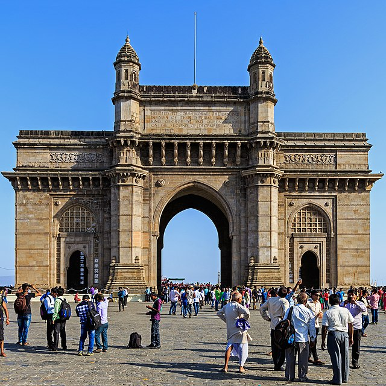
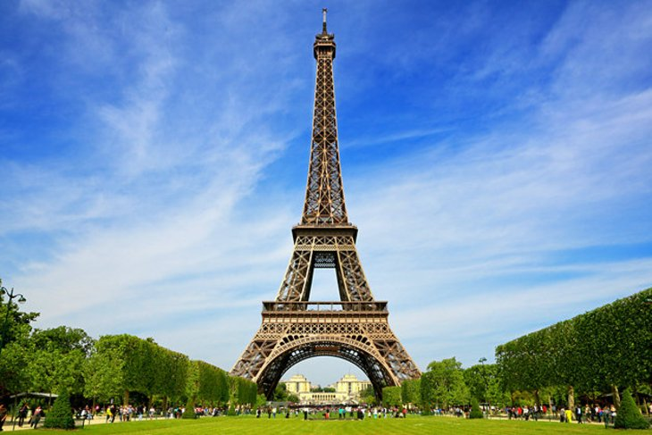
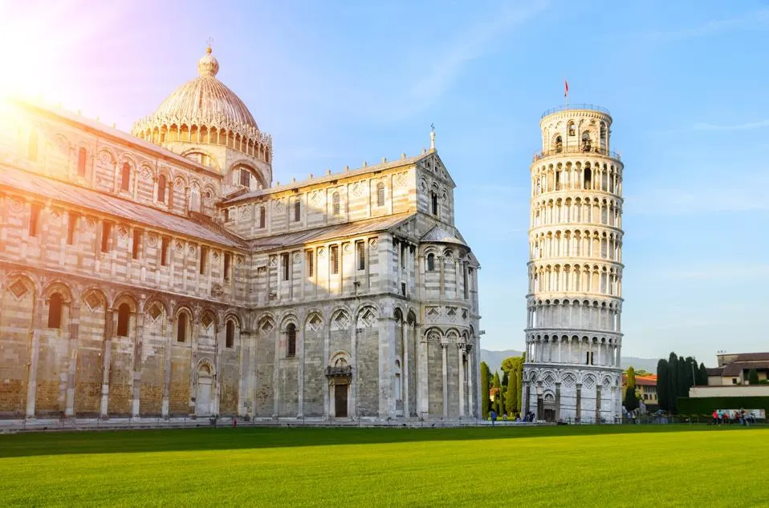
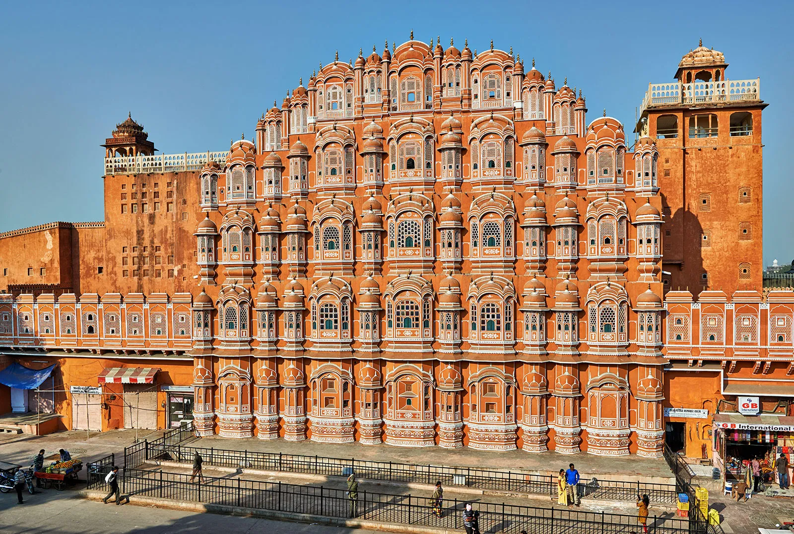
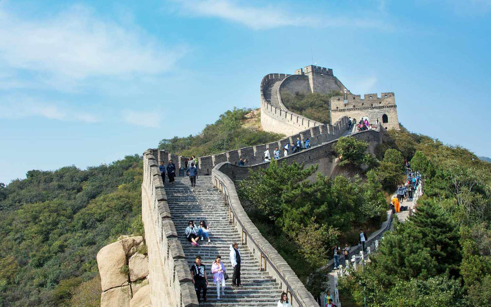
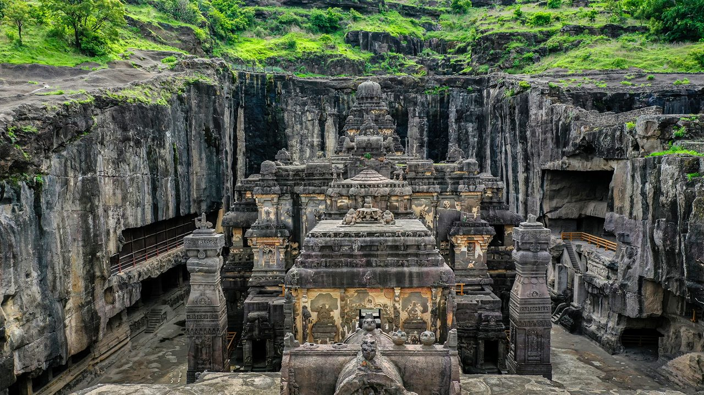
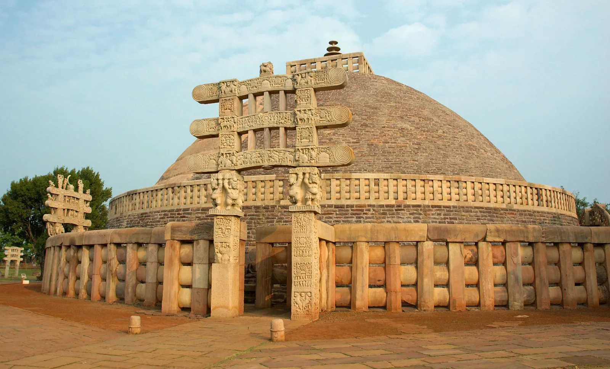
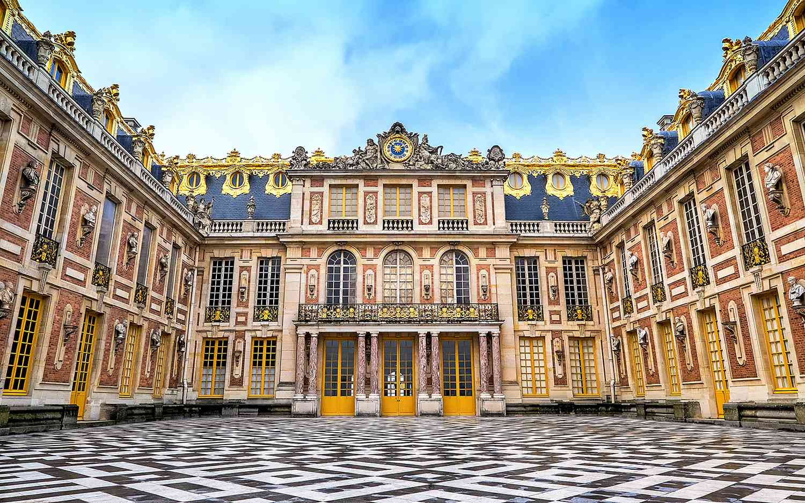
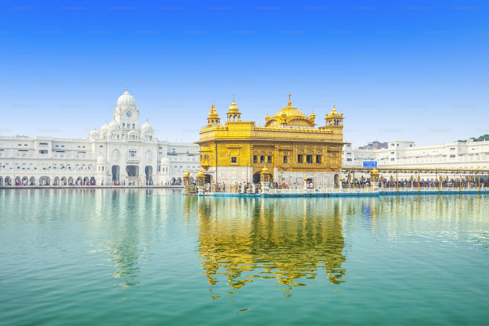

Historic Sites
Journey through time and uncover the legacy of human civilization
The History of Historic Sites Conservation
Historic sites conservation is the practice of protecting and preserving buildings, monuments, and landscapes of historical significance. Culturally, humans have long preserved sacred and imperial structures, but the modern conservation movement emerged during the late 18th and early 19th centuries in Europe. Prompted by the rapid changes of the Industrial Revolution, intellectuals like John Ruskin and William Morris advocated for preserving the integrity of historical craftsmanship, arguing that historic structures belong as much to the past as they do to the future.
In the 20th century, international guidelines like the Athens Charter (1931) and the Venice Charter (1964) established professional standards for restoration and preservation. This culminated in the establishment of the UNESCO World Heritage Convention in 1972, which identifies and protects sites of outstanding universal value across the globe. Today, historic site conservation bridges the gap between generations, providing physical links to our collective history and celebrating the diverse architectural and cultural triumphs of human civilization.
10 Legendary Historic Sites

1. Gateway of India
Location: Mumbai, India | Built: 1924
The Gateway of India is an iconic Indo-Saracenic arch-monument overlooking the Arabian Sea. Constructed to commemorate the visit of King George V and Queen Mary to India in 1911, it stands as a basalt monument of great architectural significance and a cultural symbol of Mumbai.
Tap for Location
2. Eiffel Tower
Location: Paris, France | Built: 1889
Built for the 1889 World's Fair by engineer Gustave Eiffel, this 330-meter-tall wrought iron lattice tower has become a global cultural icon. Initially controversial, it represents a remarkable structural triumph of the industrial age and commands panoramic city views.
Tap for Location
3. Leaning Tower of Pisa
Location: Pisa, Italy | Built: 1173 - 1372
This freestanding bell tower of Pisa Cathedral is famous worldwide for its unintended four-degree tilt. The tilt, caused by an unstable foundation of sand and clay, has survived centuries and has been stabilized through modern engineering projects.
Tap for Location
4. Hawa Mahal
Location: Jaipur, India | Built: 1799
Known as the "Palace of Winds," this pink and red sandstone structure is built in the shape of Lord Krishna's crown. Its 953 small windows (jharokhas) allowed royal women to observe street festivals while remaining hidden from public view.
Tap for Location
5. Great Wall of China
Location: China | Built: 7th Century BCE onwards
The Great Wall is a series of fortifications built across the historical northern borders of ancient China to protect against nomadic invasions. Stretching over 21,000 kilometers, it stands as an epic marvel of stone, brick, and military defensive engineering.
Tap for Location
6. Ajanta Caves
Location: Maharashtra, India | Built: 2nd Century BCE
The Ajanta Caves are about 30 rock-cut Buddhist cave monuments. The caves include paintings and rock-cut sculptures described as among the finest surviving examples of ancient Indian art, depicting Jataka tales and Buddhist cosmology.
Tap for Location
7. Jal Mahal
Location: Jaipur, India | Built: 1750
Jal Mahal (meaning "Water Palace") is a palace in the middle of the Man Sagar Lake in Jaipur. The palace, built in red sandstone, exhibits a beautiful symmetrical design of Rajput and Mughal styles, with four stories submerged underwater when full.
Tap for Location
8. Sanchi Stupa
Location: Sanchi, India | Built: 3rd Century BCE
The Great Stupa at Sanchi is one of the oldest stone structures in India. Commissioned by Emperor Ashoka, it features a hemispherical dome built over the relics of Buddha, surrounded by highly detailed carved gateways (toranas).
Tap for Location
9. Palace of Versailles
Location: Versailles, France | Built: 1661 - 1710
Originally a royal hunting lodge, the Palace of Versailles was expanded by King Louis XIV into an opulent, gilded court. It represents the height of French Baroque architecture, incorporating the Hall of Mirrors and magnificent gardens.
Tap for Location
10. Golden Temple
Location: Amritsar, India | Built: 1577
Also known as Sri Harmandir Sahib, the Golden Temple is the holiest shrine in Sikhism. Renowned for its stunning marble architecture and upper gold-leaf layers, the temple is surrounded by a sacred pool and stands as a symbol of peace and equality.
Tap for Location